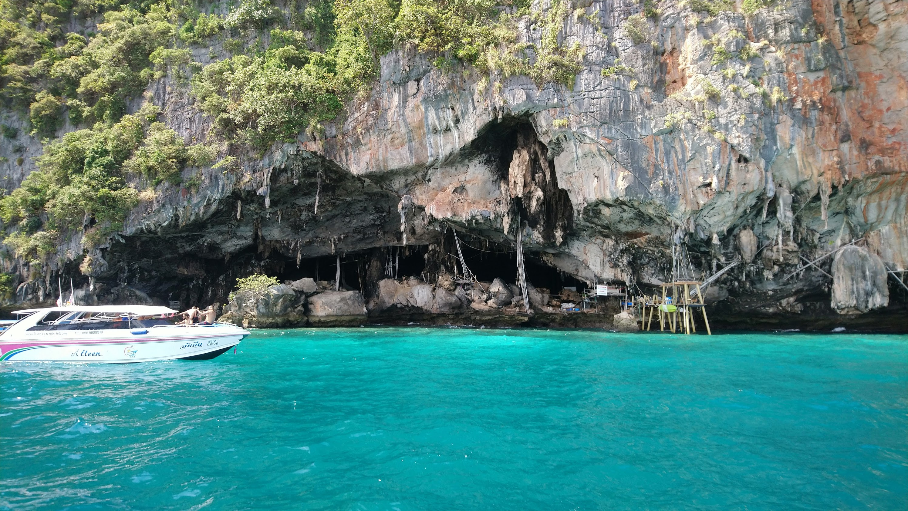

See more about me here TEMPLATED
See more about me here TEMPLATED

Explore the beauty of nature
Indulge in music

Training mind and body

Connect to the world TEMPLATED
Home • Projects • Teaching resources • Publications • Presentations • CV • Google Scholar
Music • Traveling • Languages • Cooking • Jiu-Jitsu
"An unexamined life is not worth living. One thing only I know, is that I know nothing." -- Socrates
Hi, I'm Danny (Min) Leung. Danny is my English name and Min is my original name. I come from Hong Kong. This is a beta version of my personal website built from whatever I decide to post online. I hope to share you who I am, my research, resources, my teaching materials made in my academic life. I am primarily an atmospheric scientist and data scientist, but I'm not just that. I also do music and martial arts, cook, study philosophy, translate politics and sociology, learn languages, and travel. I try to live a multidimensional life with multiple skill sets and entities, as life in 21st century will be more challenging and mobile than ever and we need more assets to survive, revive, and evolve.
I am a doctoral (Ph.D) candidate in the Department of Atmospheric and Oceanic Sciences at the University of California, Los Angeles, working with Jasper Kok. I graduated from the Earth System Science Programme at The Chinese University of Hong Kong as an undergrad and master (M.Phil.) under Amos Tai. I appreciate nature and enjoy discovering the underlying patterns and principles of the world, and Earth System Science is a multidisciplinary combination of nature, physics, math, and more. Apart from that, I am also an associate pianist at the Trinity College London (ATCL), and I am a Brazilian Jiu-Jitsu (BJJ) athlete studying under Tahi Burns at the PKG Academy. You can find at least a part of my world that you're interested in below.

My academic work
See my research on atmospheric chemistry, chemistry-climate interactions, and my current research of physics of dust emissions.

Science in Daily Life
See a layman introduction of my academic work on how weather is related to air quality. This is how I talk about research to my relatives at home. Hmm, still a bit hard to follow?

I gather a collection of teaching material, including lectures and workshops on atmospheric science and other subjects here.

Open source code
I put my codes for research, lectures and this website here.
Nam vel ante sit amet libero scelerisque facilisis eleifend vitae urna
Traveling around the world